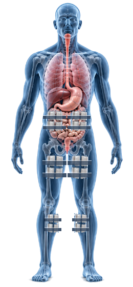

⟲ Geser kursor mouse atau usap layar untuk memutar tubuh 360° ⟳

Penyelundupan narkotika dengan metode menelan paket ke dalam organ pencernaan.
Gunakan sarung tangan nitril standar. Dilarang keras melakukan pemeriksaan fisik internal invasif rongga tubuh tanpa tenaga medis resmi. Hubungi dokter rujukan dan koordinasikan pengamanan barang bukti.
Selamat! Anda telah memahami modul modus penyelundupan narkotika di badan kurir.